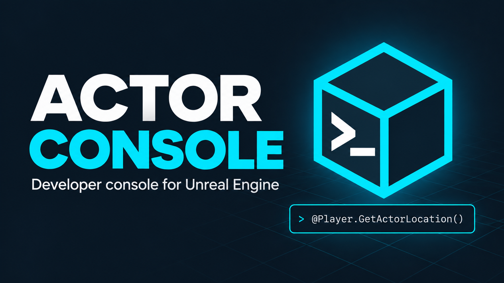
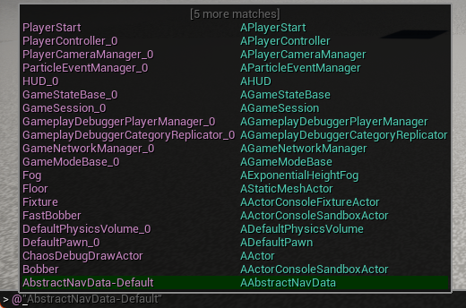
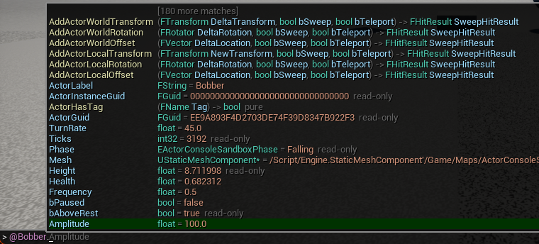
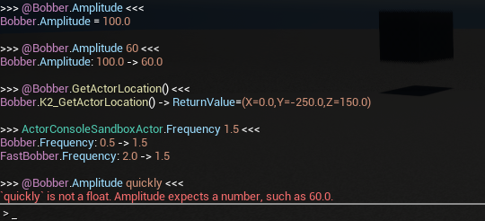
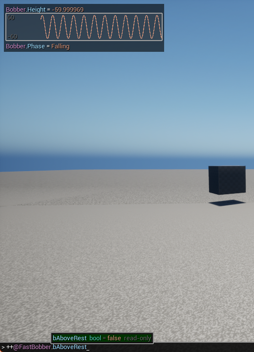
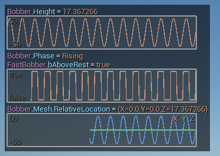
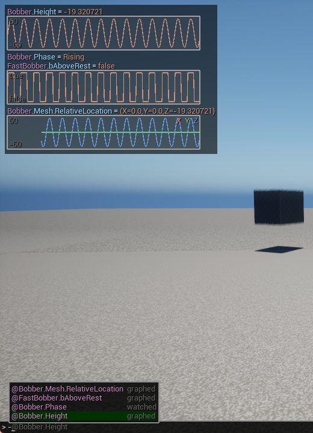
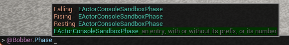
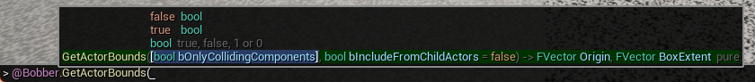
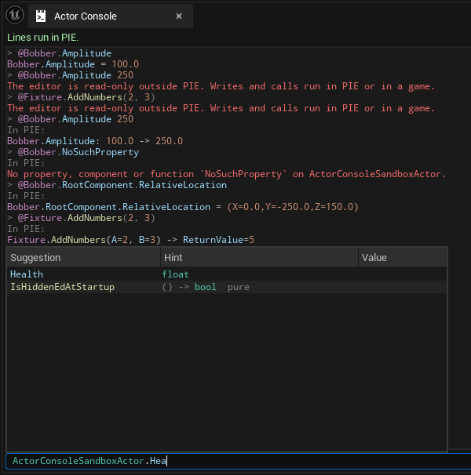

Unreal's console can already change a property on every instance of a class and call a function on an object - if you know the engine's internal names by heart. It never shows what a call returned, it quietly reports success when a value did not parse, and nothing helps you find the class, the actor, the variable or the function you are looking for. So checking something in a running game usually means adding a throwaway Blueprint node, compiling and playing again.
Actor Console gives you one short line for all of it, while the game runs: read a value, change it, or call a function on a class or on one actor you name - @Player.GetActorLocation(), APawn.bHidden true - and see the result printed back. Autocomplete suggests every part of the line as you type and tells you what each suggestion is: a variable's type and current value, a function's parameters and what it returns. It works in the in-game console, in its own editor tab and in the Output Log, in Play In Editor and in Debug and Development builds of your game.
Enable Actor Console in Edit > Plugins and restart the editor when it asks. That is the whole installation.
@ - the actors of the level are listed. Pick one with the arrow keys and Tab.. - its variables, components and functions are listed, each with its type or signature. Pick bHidden and press Enter. The console prints its value: bHidden = false.@MyActor.bHidden true, and press Enter. The actor disappears, and the console prints bHidden: false -> true.@MyActor.GetActorLocation() prints the location it returned.After @, the list holds the actors of the level, each with its class:

After the actor and a ., it holds what the actor has - each variable with its type and current value, each function with its signature:

The same lines work in the Actor Console tab (Tools > Actor Console) and in the Output Log once Actor is chosen in the drop-down beside its command field.
A line starts with what it works on - a class, or one actor after @ - walks on through variables and components with ., and ends in one of three ways:
| Line | What it does |
|---|---|
@Player.CharacterMovement.MaxWalkSpeed | Reads a variable of the actor named Player. |
@Player.CharacterMovement.MaxWalkSpeed 1200 | Writes it. = 1200 works too. |
ACharacter.CharacterMovement.MaxWalkSpeed 1200 | Writes it on every character in the world. |
@Player.GetActorLocation() | Calls a function and prints what it returned. |
@Player.SetActorLocation(NewLocation=0 0 300, bTeleport=true) | Calls with named arguments. |
KismetSystemLibrary.PrintString("Hello") | Calls a static function; no actor is needed. |
@"Point Light 2".LightComponent.Intensity 5000 | Names an actor whose label has spaces in it. |
@Player.Tags[0] Boss | Writes an element of an array. @Shop.Prices[Sword] reaches a map entry. |
@Player.RootComponent.RelativeLocation.Z 300 | Writes one member of a struct - and the component moves. |
Names ignore case. A name that is not a plain identifier is written in quotes, @"Point Light 2", with \" and \\ as the only escapes.
Here is what a few lines print in the in-game console: a read, a write and the value before and after it, a call and what it returned, a write on a class reported for each instance, and a value that does not fit, refused with what was expected:

Pawn or APawn - and a Blueprint with or without _C: BP_Enemy, BP_Enemy_C. It means every live instance of that class and its subclasses in the world, components and other objects included: StaticMeshComponent.CastShadow false changes every static mesh component in the level. A class line that reads prints at most 100 objects - the Max Printed Instances setting - and says how many it left out. A write or a call on a class reports every instance, so no change goes unseen.@ and its name: the label you see in the Outliner, or its object name, which autocomplete also lists. A runtime-spawned actor - the player's pawn among them - is named by the engine, @BP_Player_C_0. No name is reserved: @Player is the actor called Player. A name that more than one actor has is an error listing all of them.stat fps, r.ScreenPercentage 50 - still goes to the engine, and works as it always did.After the class or the actor, each .name is looked up in this order: a variable, then - on an actor - a component with that name, then a function when ( follows. The path continues through object references, components, structs, arrays and maps: @Player.Controller.PlayerCameraManager.DefaultFOV. A component is reachable both by the variable that holds it and by its own name. A reference that is None stops the line with a message naming it.
@Player.CharacterMovement.MaxWalkSpeed prints the object, the path and the value - its type was already beside the suggestion you picked:
`` BP_Player_C_0.CharacterMovement.MaxWalkSpeed = 600.0 ``
A read shows the value stored in the variable, never the result of a getter function.
Values are written the way the engine writes them, (X=0.0,Y=0.0,Z=300.0), and in shorter forms:
| Type | You can write |
|---|---|
bool | true, false, 1, 0 |
| a struct of numbers | the numbers in order, separated by spaces or commas: 0 0 300 for a vector, 0 90 0 for a rotator (Pitch, Yaw, Roll) |
| an enum | MOVE_Walking, Walking, or its number |
| an object | None, an actor as @Name, or the path of an object already in memory |
| a string or a name | quoted, or simply the rest of the line |
bHidden, RelativeLocation, a light's Intensity, a mesh component's StaticMesh - are applied through the function that makes them show.MaxWalkSpeed: 600.0 -> 1200.0.SetActorLocation(NewLocation=0 0 300, bTeleport=true).@Player.GetActorLocation( runs as @Player.GetActorLocation(), so a function picked from autocomplete runs as soon as you press Enter.-> ReturnValue=true, SweepHitResult=(...). A reference parameter you pass in is printed there too, with its final value.GetCurrentLevelName is filled in for you.K2_ - GetActorLocation - and, in the editor and PIE, by the name its Blueprint node shows.Delay - cannot be called from a line.Put + in front of a path and its value stays at the top of the game viewport, kept current while you play; ++ draws it over time as well. - stops watching it, and - alone stops every watch.
| Line | What it does |
|---|---|
+@Player.CharacterMovement.MaxWalkSpeed | Shows the value, updated every frame. |
++@Player.RootComponent.RelativeLocation | Shows it and draws the last 10 seconds of it - one line each for X, Y and Z. |
-@Player.CharacterMovement.MaxWalkSpeed | Stops watching it. |
- | Stops every watch. |
A watch is typed like any other line. Here ++@FastBobber.bAboveRest is being added to two watches already running - a graphed number and a value on its own:

With the console closed they stay where they are: a row for each watch, and under it a graph for what ++ draws - a number, a bool between false and true, and a vector one line per member:

+APawn.bHidden.bool values between false and true, and vectors, rotators and colours one line per member. Text and objects show their value only.-, autocomplete lists what you are watching, each marked graphed or watched:
| Where | Available | Hints |
|---|---|---|
| The in-game console, ~ | PIE and Debug and Development games | in the second column, beside each suggestion; the signature of the function being called and how to write the value in the first rows |
| The Actor Console tab, Tools > Actor Console | the editor | columns for the hint and the current value; the signature of the function being called and how to write the value under the line |
| The Output Log, with Actor chosen | the editor | in the tooltip |
ExecuteConsoleCommand, -ExecCmds, the engine's console | wherever the plugin runs | none |
ExecuteConsoleCommand or from -ExecCmds, start the line with ActorConsole - ActorConsole APawn.bHidden true - so that it reaches Actor Console whatever the engine's own handlers make of it.UActorConsoleGameConsole to have both.| After | Suggested | Hint |
|---|---|---|
@ | the actors of the world, by label and by object name | the actor's class |
| the first word | classes with live instances, then classes with static functions | 12 in world, or static functions |
. | variables, components and functions | a variable's type and current value, a component's class, a function's signature |
[ | the indices or keys that exist | the element's type and value |
| a variable and a space | true / false, an enum's entries, None and actors | the type and how to write it |
( or , | values for the current parameter | the signature, with the current parameter marked, and the parameter's type and how to write it |
A variable's hint can also say replicated - on a client, the server will overwrite a change - read-only - Blueprint cannot write it, though the console can - and setter. A function's signature reads like its Blueprint node: (FVector NewLocation, bool bSweep, bool bTeleport) -> bool, FHitResult SweepHitResult. Matching ignores case and finds word starts: gal finds GetActorLocation.
The list shows what a suggestion puts in - true, @Player, CharacterMovement - and accepting it completes the line around it. While you type a value, the hint says how one of its type is written, even where there is nothing to pick from: FVector (X=0,Y=0,Z=0) or 0 0 0. After an enum variable and a space, that is its entries:

Inside a call's parentheses the signature is written over the function's name, with the parameter being typed marked, and above it the values that parameter takes:

In the in-game console and the Actor Console tab, the line you type, the suggestions, their hints and what your lines print are coloured by what each part is: classes and types, actors, variables and components, functions, and values each have a colour of their own, tags and notes such as replicated stay faded, and errors and warnings are printed in colours of their own. A part is coloured by where it stands in the line, so a misspelt name is coloured too - the line says what is wrong when you run it. The colours are in the settings below.
With no Play In Editor session running, a line only reads: every write and every function call is refused with The editor is read-only outside PIE. Writes and calls run in PIE or in a game. - so a line typed at the wrong moment can never change your level. Autocomplete works as usual. During PIE, lines work on the PIE world, and nothing in the level is changed when PIE ends.
In the Actor Console tab: outside PIE a read answers while a write and a call are refused; in PIE the same write and call are made; and under them the suggestions for the line being typed, with their hints:

A class default object, a component template of a Blueprint and the template actor of a Child Actor component change every instance created after them, and in the editor the Blueprint that gets saved. A mesh, a material or a data asset is shared by everything that uses it, and a change made in PIE outlives PIE. So Actor Console never writes to them or calls a function on them, wherever a path leads - such a line is refused and names the object. A template is never suggested or accepted as a value; an asset is, so @Rock.StaticMeshComponent.StaticMesh /Game/Meshes/SM_Boulder.SM_Boulder gives the component another mesh without changing any asset. Reading them is allowed.
Functions you call are your own code and are not restricted: one that changes an asset still does.
| Editor and PIE | Debug, Development | Shipping | |
|---|---|---|---|
| Actor Console | yes | yes | not included |
@ by label | yes | yes | - |
| Default argument values, Blueprint node names | yes | no | - |
Project Settings > Plugins > Actor Console:
| Setting | Default | Meaning |
|---|---|---|
| Max Printed Instances | 100 | how many objects a read on a class prints before it says how many it left out; a write or a call reports every instance |
| Max Value Length | 200 | longer values are shortened in the console; the log always has them whole |
| Max Suggestions | 200 | how many suggestions autocomplete returns at most |
| Replace Game Console | on | use Actor Console's in-game console, unless the project sets its own |
| Color Syntax | on | colour the line, the suggestions, their hints and what lines print; off, the consoles keep their own colours |
| Class Color | teal | classes, and the types in hints and signatures |
| Actor Color | orchid | actors, @Player, and the object a printed line is about |
| Property Color | light blue | variables, components, and the names of parameters, arguments and results |
| Function Color | pale yellow | functions |
| Value Color | orange | numbers, text, true, None, enum entries, indices and keys, and default values |
| Error Color | red | errors a line prints |
| Warning Color | yellow | warnings a line prints |
Add ActorConsoleRuntime to your module's dependencies outside Shipping only, and keep the code that uses it out of Shipping too:
``csharp if (Target.Configuration != UnrealTargetConfiguration.Shipping) { PrivateDependencyModuleNames.Add("ActorConsoleRuntime"); } ``
```cpp #if !UE_BUILD_SHIPPING #include "ActorConsole.h"
FActorConsoleResult Result = FActorConsole::Execute(TEXT("APawn.bHidden true"), FActorConsoleContext(GetWorld())); #endif ```
FActorConsole::Complete returns the suggestions for a line and a cursor position, for a front end of your own.
``cpp FActorConsoleEffects::RegisterFunction(UMyLampComponent::StaticClass(), TEXT("Brightness"), TEXT("SetBrightness")); ``
FActorConsoleEffects::Register takes a function of your own instead, for anything else.
UActorConsoleGameConsole.Ask questions, report bugs and suggest features in #actor-console, the plugin's own channel on Discord.